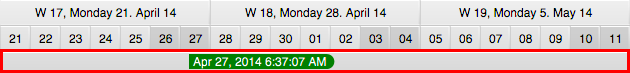

Overview
The eventline is a control that displays time cursors: time at mouse location, selected time interval. This control is part of the Timeline and displayed at the bottom.

Date & Time Formatting
Each application has its own requirements regarding the format in which dates and times are displayed. Accordingly, the
eventline features a date and time formatter that can be replaced by calling setDateTimeFormatter(). Formatter instances
can be looked up by calling static methods on the DateTimeFormatter class, e.g. DateTimeFormatter.ISO_LOCAL_DATE_TIME.
Cursor: Location & Time
The eventline keeps track of the mouse cursor location when the mouse hovers over the timeline or the graphics control.
The location is stored in the read-only cursorLocationProperty(). Whenever the location changes the eventline will also
update the value of cursorTimeProperty(). These two properties make the eventline the perfect provider for cursor
information for the entire application.
Marked Time Interval
Whenever the user edits an activity the eventline will display the new time interval occupied by the activity. This
interval is stored in the markedTimeIntervalProperty(). When its' value changes the eventline will display two additional
time cursors, one for the beginning of the time interval and one for its' end.
Frozen Row
The eventline contains an instance of GraphicsBase which means that the eventline can also display activities but only
in a single row. Since the eventline does not scroll vertically this will allow applications to provide a "frozen row".
This feature is very useful if there is a need to visualize "global" activities, e.g. milestones, that are relevant for
all rows underneath. The following API is relevant for working with this feature:
public final SingleRowGraphics<Row<?, ? ,?> getGraphics();
public final Row<? ,? ,?> row = getFrozenRow();